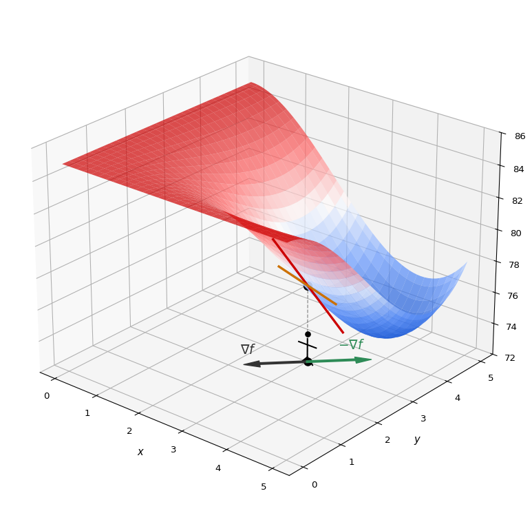
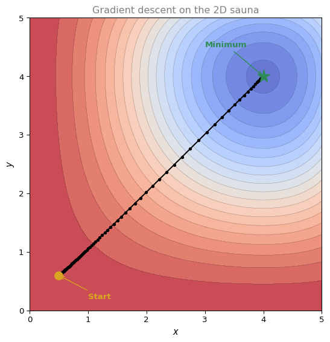
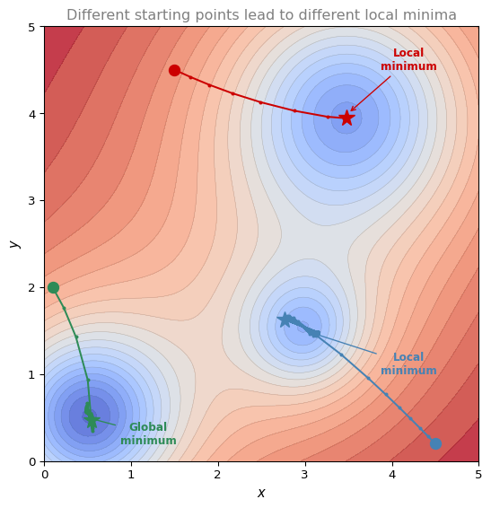

Gradient Descent in Multiple Variables
calculus
Now that you have learned gradient descent for one variable, let us extend it to functions of multiple variables.
Recall the 2D sauna example from the Gradients page. You are standing in a room where the temperature varies across both \(x\) and \(y\) directions, and you want to find the coldest spot. Earlier, you solved this analytically by computing both partial derivatives, setting them to zero, and solving the system. Now the goal is to find the coldest spot using gradients, just as you did in the one-variable case.
The Naive Approach: Random Steps
Imagine you start at some position in the sauna. You try stepping in four random directions and check which one leads to the coldest temperature. You take that step, then repeat by trying four directions again, picking the best, and continuing until you reach the coldest spot.
This works, but the same question arises as in one variable. How do you pick the directions? Is there a smart way?
Just like before, the answer is derivatives. Except this time, you use the gradient (the vector of all partial derivatives) to choose direction.
The Gradient Points Uphill
In one variable, the derivative told you the slope. If the slope was positive, you moved left (subtracted). If negative, you moved right (added). In two variables, you have a gradient vector with two components (the two partial derivatives). Each component tells you the slope in one direction.
Here is what happens geometrically. At your starting point \((x_0, y_0)\), you compute the two partial derivatives. Each one gives a slope in its respective direction. When you combine them into a vector and project it onto the “floor” (the \(xy\)-plane), you get the gradient vector.
The gradient has a special property. It points in the direction of steepest ascent. If you take a tiny step in the direction of the gradient, you reach the hottest possible nearby point.
But we want to get colder, not hotter. So we step in the direction of the negative gradient (\(-\nabla f\)). That is the direction of steepest descent, the direction that takes you to the coldest nearby point in one tiny step.
The Update Rule
The formula is exactly the same as in one variable, but with vectors instead of scalars.
\[ \begin{bmatrix} x_1 \\ y_1 \end{bmatrix} = \begin{bmatrix} x_0 \\ y_0 \end{bmatrix} - \alpha \cdot \nabla f(x_0, y_0) \]
where \(\nabla f(x_0, y_0) = \begin{bmatrix} \frac{\partial f}{\partial x}(x_0, y_0) \\\\ \frac{\partial f}{\partial y}(x_0, y_0) \end{bmatrix}\).
This is identical in structure to the one-variable case \(x_1 = x_0 - \alpha \cdot f'(x_0)\), except the derivative is replaced by the gradient vector.
Example: The 2D Sauna
Recall the temperature function from the gradients page:
\[ T(x, y) = 85 - \frac{1}{90}\, x^2(x-6)\, y^2(y-6) \]
The gradient (which we computed previously) is:
\[ \nabla T = \begin{bmatrix} -\frac{1}{90}\, x(3x - 12)\, y^2(y-6) \\\\ -\frac{1}{90}\, x^2(x-6)\, y(3y - 12) \end{bmatrix} \]
Let us run a couple of steps with starting point \((0.5, 0.6)\) and learning rate \(\alpha = 0.05\).
Step 1: Compute the gradient at \((0.5, 0.6)\):
\[ \nabla T(0.5, 0.6) = \begin{bmatrix} -0.1134 \\ -0.0945 \end{bmatrix} \]
Update:
\[ \begin{bmatrix} x_1 \\ y_1 \end{bmatrix} = \begin{bmatrix} 0.5 \\ 0.6 \end{bmatrix} - 0.05 \cdot \begin{bmatrix} -0.1134 \\ -0.0945 \end{bmatrix} = \begin{bmatrix} 0.5057 \\ 0.6047 \end{bmatrix} \]
We moved slightly closer to the minimum.
Step 2: Compute the gradient at the new point and repeat. Each iteration brings us closer. After many iterations, we converge to the minimum at approximately \((4, 4)\).

The Algorithm
The full gradient descent algorithm for multiple variables:
- Define a learning rate \(\alpha\) (alpha).
- Choose a starting point \((x_0, y_0)\).
- Update: \((x_k, y_k) = (x_{k-1}, y_{k-1}) - \alpha \cdot \nabla f(x_{k-1}, y_{k-1})\)
- Repeat step 3 until you are close enough to the minimum (when the gradient is nearly zero and you barely move).
Note
This generalizes to any number of variables. If your function has 100 parameters, the gradient is a vector with 100 entries, and the update rule is the same. This is exactly what happens inside neural networks with millions of parameters.
Local Minima in Multiple Variables
Just like in one variable, gradient descent in two or more variables can get stuck in local minima. The practical solution is the same. Run gradient descent multiple times from different starting points.

There is no guaranteed way to know if you have found the global minimum. But if you run gradient descent from many different starting points, the best result you find is likely to be a good solution.
Python Implementation
The multivariable gradient descent function is a direct extension of the one-variable version. Instead of a scalar derivative, you subtract the gradient vector:
import numpy as np
def gradient_descent_2d(dfdx, dfdy, x, y, learning_rate=0.1, num_iterations=100):
for _ in range(num_iterations):
x = x - learning_rate * dfdx(x, y)
y = y - learning_rate * dfdy(x, y)
return x, yDefine the 2D sauna function and its partial derivatives:
def T(x, y):
return 85 - (1/90) * x**2 * (x - 6) * y**2 * (y - 6)
def dTdx(x, y):
return -(1/90) * x * (3*x - 12) * y**2 * (y - 6)
def dTdy(x, y):
return -(1/90) * x**2 * (x - 6) * y * (3*y - 12)Run gradient descent starting at \((0.5, 0.6)\) with learning rate \(0.1\):
x_min, y_min = gradient_descent_2d(dTdx, dTdy, 0.5, 0.6, learning_rate=0.1, num_iterations=100)
print(f"Minimum found at: ({x_min:.4f}, {y_min:.4f})")
print(f"Temperature at minimum: {T(x_min, y_min):.4f} °C")Minimum found at: (4.0000, 4.0000)
Temperature at minimum: 73.6222 °CTry different starting points and learning rates:
starts = [(0.5, 0.6), (1.0, 4.5), (4.5, 1.0)]
for (sx, sy) in starts:
xm, ym = gradient_descent_2d(dTdx, dTdy, sx, sy, learning_rate=0.1, num_iterations=200)
print(f"Start ({sx}, {sy}) → minimum at ({xm:.3f}, {ym:.3f}), T = {T(xm, ym):.2f} °C")Start (0.5, 0.6) → minimum at (4.000, 4.000), T = 73.62 °C
Start (1.0, 4.5) → minimum at (4.000, 4.000), T = 73.62 °C
Start (4.5, 1.0) → minimum at (4.000, 4.000), T = 73.62 °CInteractive Lab: 2D Gradient Descent
Note
This tool animates gradient descent on the 2D sauna function. Adjust the starting point, learning rate, and iterations, then click ▶ Run to watch the path descend toward the minimum.
Previous: Gradient Descent | Next: Optimization Using Gradient Descent